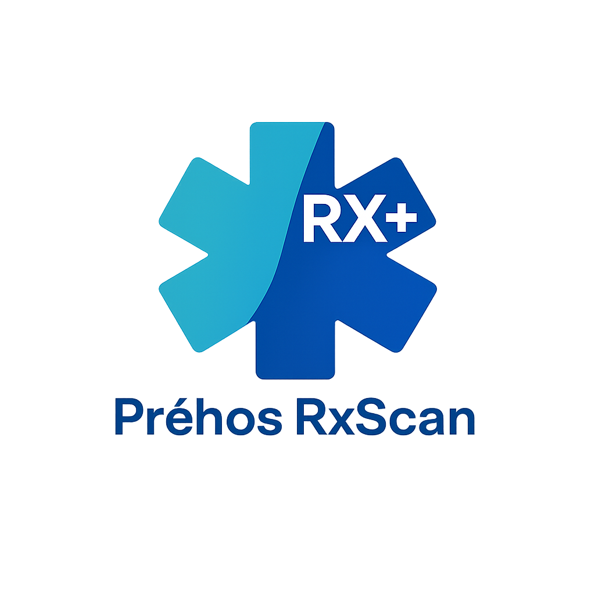

Préhos RxScan (« RxScan », « l’Application ») s’engage à protéger la confidentialité et la sécurité des renseignements traités dans le cadre de l’utilisation de l’Application.
La présente Politique décrit quelles informations peuvent être recueillies, comment elles sont utilisées et les choix offerts aux utilisateurs.
L’Application peut recueillir certaines informations techniques nécessaires à son fonctionnement, notamment :
Lorsque l’utilisateur accepte volontairement de participer au programme d’amélioration de RxScan, certaines données peuvent être transmises afin d’améliorer le service, notamment :
La participation à ce programme demeure facultative.
Les informations recueillies peuvent être utilisées afin de :
Les informations ne sont pas utilisées à des fins publicitaires.
L’utilisation de certaines fonctionnalités repose sur le consentement de l’utilisateur.
L’auto-reporting est entièrement facultatif et peut être refusé sans limiter l’utilisation normale de l’Application.
Le consentement accepté est enregistré localement afin d’assurer la traçabilité des autorisations accordées.
Les données transmises dans le cadre du programme d’amélioration peuvent être conservées aussi longtemps que nécessaire pour :
Les données peuvent être supprimées lorsqu’elles ne sont plus nécessaires.
Les données transmises peuvent être hébergées sur des services infonuagiques utilisés par Préhos RxScan pour l’exploitation de l’Application.
Des mesures raisonnables sont mises en œuvre afin de protéger les informations contre l’accès non autorisé, la perte, la divulgation et la modification non autorisée.
Aucun système informatique ne peut toutefois garantir une sécurité absolue.
Préhos RxScan ne vend pas les informations des utilisateurs.
Les informations peuvent être partagées uniquement :
Les utilisateurs peuvent retirer leur consentement à la participation au programme d’amélioration à tout moment lorsque cette fonctionnalité est offerte dans l’Application.
Le retrait du consentement n’affecte pas la légalité des traitements effectués avant ce retrait.
Les utilisateurs peuvent demander la suppression des données transmises volontairement en communiquant avec Préhos RxScan.
Certaines informations peuvent être conservées lorsque la loi l’exige ou lorsqu’elles sont nécessaires à la protection des droits légaux de l’organisation.
Préhos RxScan peut modifier la présente Politique de confidentialité à tout moment.
La version en vigueur sera celle publiée dans l’Application ou sur les pages officielles de documentation.
Préhos RxScan
Courriel : prehosscanrx@gmail.com